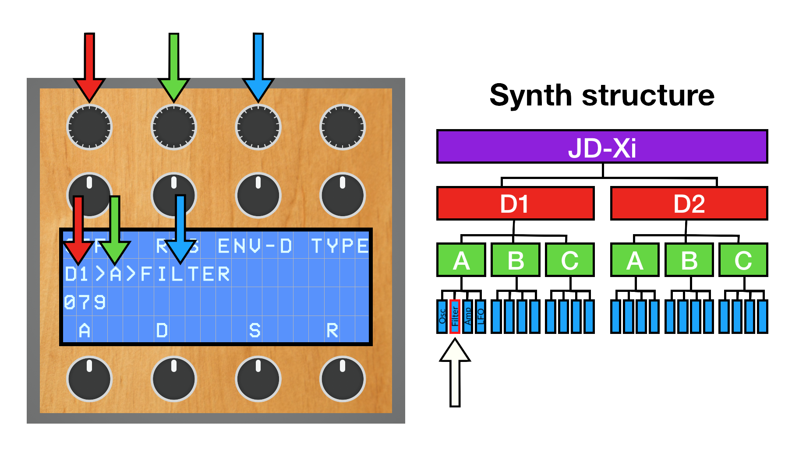

The code for this project is available near the bottom of the page.

A homemade MIDI controller aiming to solve the lack of parameter accessibility on the Roland JD-Xi synthesiser. It differs from other solutions I've seen in that customisability and potential ease-of-use are greater, and general use with a range of synthesisers is possible, rather than just with the JD-Xi.
The DivingBoard sorts different synth parameters into a three-layer-deep folder system. That sounds kind of complex and hard to navigate, but it's actually pretty straightforward:

I'll make a little video to demonstrate this in action.
Also worth mentioning is the 'learn' function, which is the bit of the DivingBoard which really works well. The process is pretty simple:
This is a summary- I will describe how stuff works in more detail in a separate linked page.
The way MIDI messages are 'learnt' by the DivingBoard is essentially a simple replay attack. My synth has an option to send all parameter alterations out as MIDI messages (either CC or Sysex, depending on the parameter). The DivingBoard can listen to these messages through a full sweep of some parameter's range, and then replay the relevant ones back to the synth when we edit the learnt parameter from the DivingBoard.
The DivingBoard is powered by an Arduino Nano and a Raspberry Pi. The Arduino reads the encoder and potentiometer inputs and sends data to the Pi when a user interaction is detected. The Pi connects to the synth via USB MIDI and sends MIDI messages to it to control parameters which otherwise require heaps of menu diving to access.
The Arduino code is written in Arduino Programming Language, and the Pi code is written in Python 3. While the Arduino code is fairly neat, the Python code needs refactoring, or possibly straight-up porting to a faster language.
I've used a Raspberry Pi 3B+ as the brain of this project because it's what I have on hand. I've tried the whole setup out with a Pi Zero subbed in, and while it works, the latency is obvious. A Pi Zero 2 would probably do the job decently.
The software for the Arduino and the Raspberry Pi is available at the bottom of the page. A full build guide can be found here.
For now, the latest version of the DivingBoard software can be downloaded here. I will try and put stuff on GitHub at some point, when I can find time to re-learn how GitHub works.
1. Arduino Nano type board at £5, Raspberry Pi Zero 2 at £15, eight potentiometers at £12, four rotary encoders at £8, 20x4 LCD at £10, tupperware at £10. For reference, the cheapest Sysex-capable MIDI controller I could find was about double that price (Novation Remote Zero). Figures correct as of 2024-01-10. ↩
2. UX needs some minor improvements (mostly idiot-proofing (not a dig at users; I'm the idiot)), a planned software editor for making more detailed configurations is planned but not written, and the device is occasionally a bit erratic; freezing or failing to boot properly are both rare but recurring problems.↩